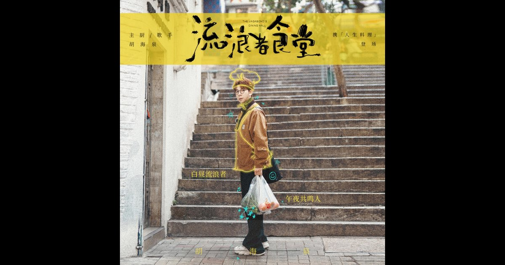
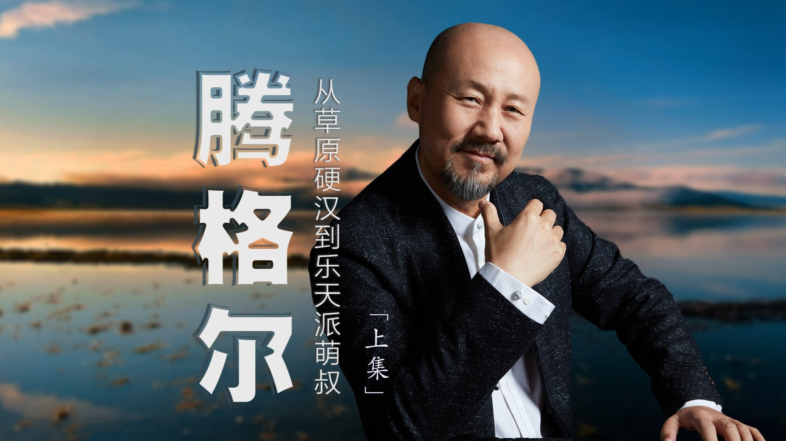
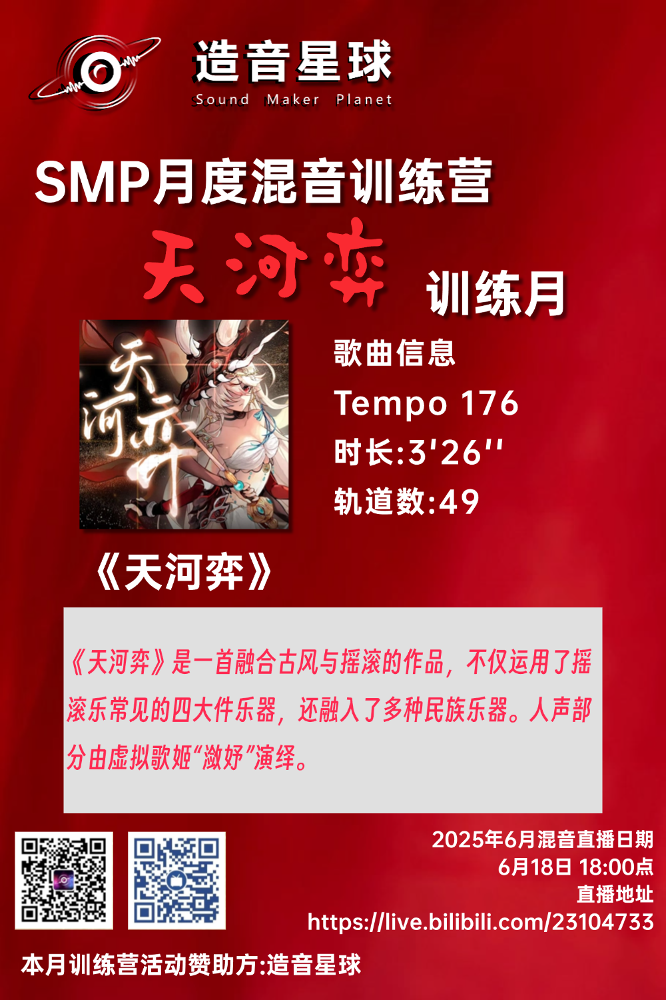
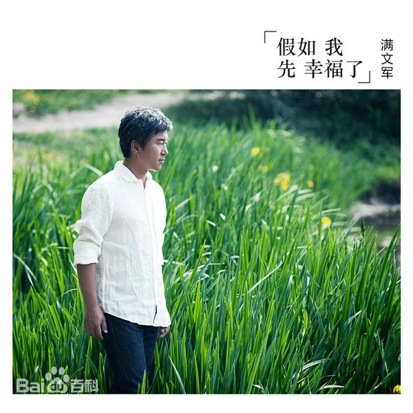
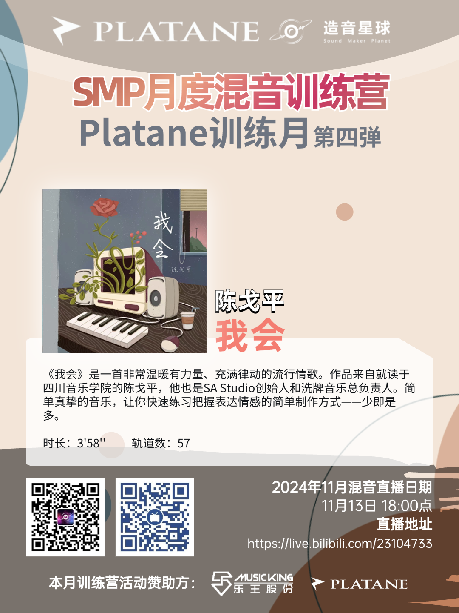
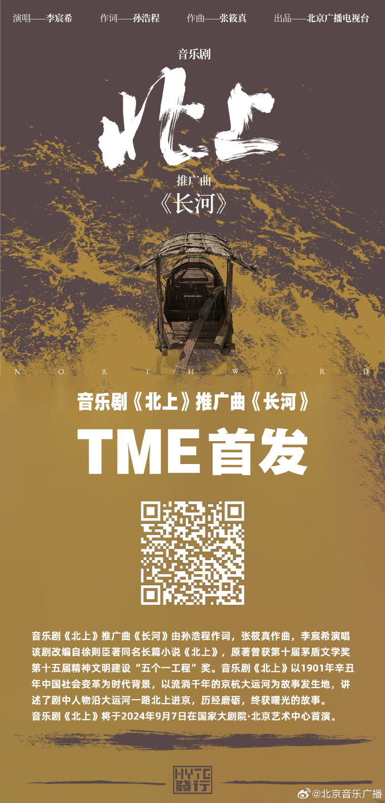
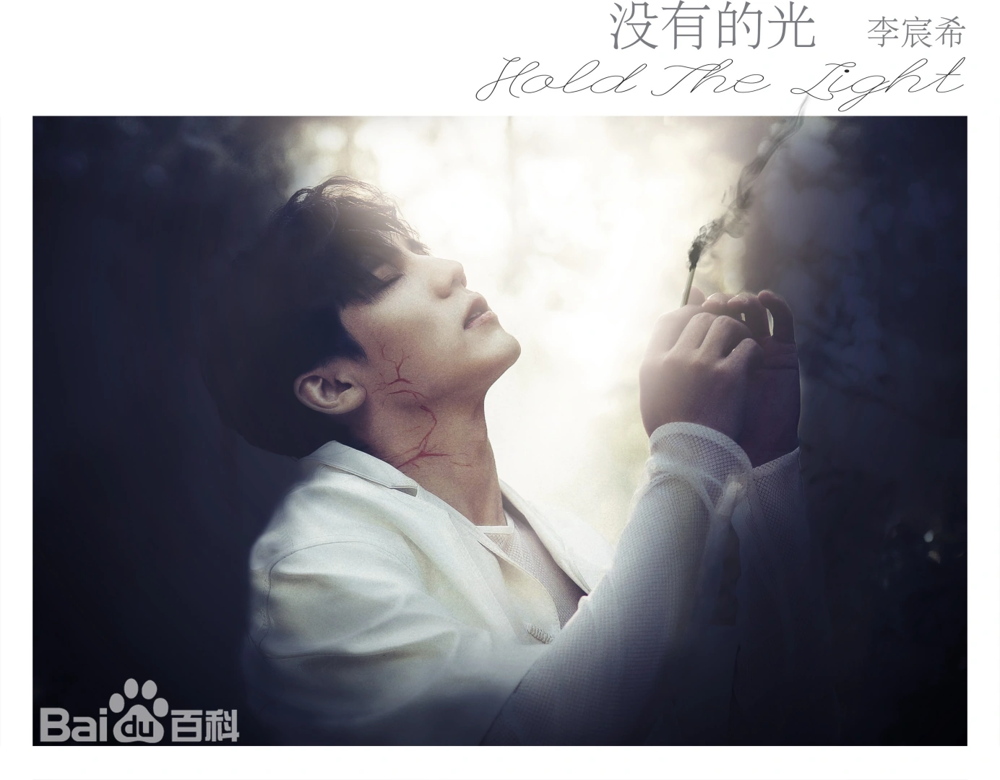
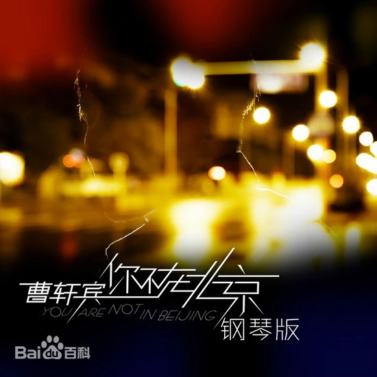

Loading · Sound Lab
声音设计师 / 混音师，广西艺术学院录音艺术方向。精通 Pro Tools、Reaper、Cubase 等主流 DAW，擅长音乐混音、游戏与影视声音设计、虚拟音源开发。2023 年主持研发广西艺术学院首款中国传统民族乐器 Kontakt 音源「羊角钮钟」，相关论文《古乐器「羊角钮钟」在现代音乐中的创新应用》发表于国家级期刊《参花》。累计交付 27 首混音作品，执行 30+ 场现场扩声与 10+ 场音乐会实况录音。
下面是已交付的真实曲目。重点试试「回放环境」切换——同一首歌在手机、耳机、车载上的表现，就是混音师真正的功力所在。音频版权归原作者及演唱者所有，仅供学习交流。








主持研发广西艺术学院首款中国传统民族乐器 Kontakt 音源，完成多力度采样录音、降噪精修、Mapping 与脚本，获国家级大创认证。
使用 Reaper 独立完成音效制作、环境音铺设与人声贴唱混音，并参与多部画本绘本的声音设计。
累计执行 30+ 场扩声项目，负责舞台返送调试、主扩搭建、现场调音台操作与突发故障排除。
第十四届中国—东盟音乐会等 10+ 场钢琴音乐会高质量实况录音与后期混音，熟练运用 AB / XY / ORTF 等制式还原真实声场。
《鹏城青春之歌》三等奖、《心灵舒缓》二等奖。
混音作品《TOOOOO BUSY》进入决赛。
《古乐器「羊角钮钟」在现代音乐中的创新应用》正式发表。
2024 年度筑梦奖学金；主导完成 2023 校级网络文化工作室项目（正艺微创）。
学历、项目认证与发表记录，均可核查。
系统学习声学理论、录音工程、音乐制作与后期混音。在校期间主持国家级大创项目，并参与多场校级与省级音乐会录音与扩声工作。
主持研发广西艺术学院首款中国传统民族乐器 Kontakt 音源。多力度采样录音、降噪精修、Mapping 与脚本全程负责，获国家级大创认证。
《古乐器「羊角钮钟」在现代音乐中的创新应用》正式发表。
多首作品进入复赛与决赛（立体声组、三维声组）。第七届、第六届全国校园混音大赛参赛作品。
混音作品《TOOOOO BUSY》进入决赛；同年获高校音乐创作大赛华南区 AI 音乐赛道二等奖、三等奖。
除了音频本身，我也把工作流沉淀成可复用的 AI Skill 与小工具。下面是其中 9 个，以及上面那个声卡自检工具。
邮件与微信都能找到我。想先了解我的水平，听听作品、翻翻经历，或者直接带走这份简历。